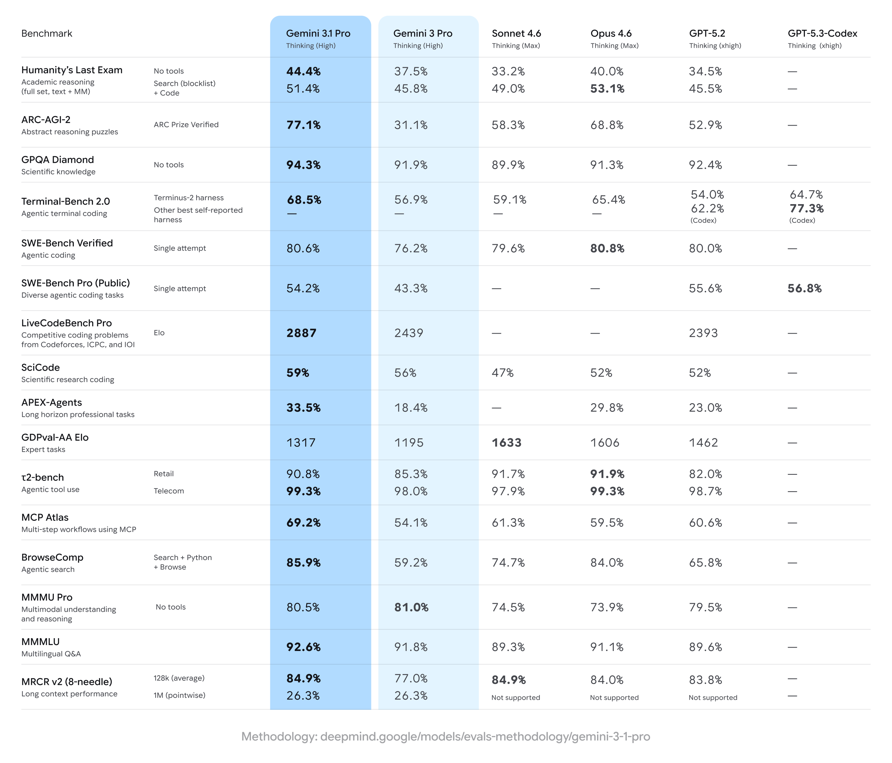

Gemini 3.1 Pro: A smarter model for your most complex tasks
Feb 19, 2026
|3.1 Pro is designed for tasks where a simple answer isn’t enough.
Equipe do Google Gemini

Last week, we released a major update to Gemini 3 Deep Think to solve modern challenges across science, research and engineering. Today, we’re releasing the upgraded core intelligence that makes those breakthroughs possible: Gemini 3.1 Pro. We are shipping 3.1 Pro across our consumer and developer products to bring this progress in intelligence to your everyday applications.
Starting today, 3.1 Pro is rolling out:
- For developers in preview via the Gemini API in Google AI Studio, Gemini CLI, our agentic development platform Google Antigravity and Android Studio
- For enterprises in Vertex AI and Gemini Enterprise
- For consumers via the Gemini app and NotebookLM
Building on the Gemini 3 series, 3.1 Pro represents a step forward in core reasoning. 3.1 Pro is a smarter, more capable baseline for complex problem-solving. This is reflected in our progress on rigorous benchmarks. On ARC-AGI-2, a benchmark that evaluates a model’s ability to solve entirely new logic patterns, 3.1 Pro achieved a verified score of 77.1%. This is more than double the reasoning performance of 3 Pro.

Intelligence applied
3.1 Pro is designed for tasks where a simple answer isn’t enough, taking advanced reasoning and making it useful for your hardest challenges. This improved intelligence can help in practical applications — whether you’re looking for a clear, visual explanation of a complex topic, a way to synthesize data into a single view, or bringing a creative project to life.
Code-based animation: 3.1 Pro can generate website-ready, animated SVGs directly from a text prompt. Because these are built in pure code rather than pixels, they remain crisp at any scale and maintain incredibly small file sizes compared to traditional video.
Complex system synthesis: 3.1 Pro utilizes advanced reasoning to bridge the gap between complex APIs and user-friendly design. In this example, the model built a live aerospace dashboard, successfully configuring a public telemetry stream to visualize the International Space Station’s orbit.
Interactive design: 3.1 Pro codes a complex 3D starling murmuration. It doesn't just generate the visual code; it builds an immersive experience where users can manipulate the flock with hand-tracking and listen to a generative score that shifts based on the birds’ movement. For researchers and designers, this provides a powerful way to prototype sensory-rich interfaces.
Creative coding: 3.1 Pro can translate literary themes into functional code. When prompted to build a modern personal portfolio for Emily Brontë’s "Wuthering Heights," the model didn’t just summarize the text. It reasoned through the novel’s atmospheric tone to design a sleek, contemporary interface, creating a website that captures the essence of the protagonist.
What’s next
Since releasing Gemini 3 Pro in November, your feedback and the pace of progress have driven these rapid improvements. We are releasing 3.1 Pro in preview today to validate these updates and continue to make further advancements in areas such as ambitious agentic workflows before we make it generally available soon.
Starting today, Gemini 3.1 Pro in the Gemini app is rolling out with higher limits for users with the Google AI Pro and Ultra plans. 3.1 Pro is also now available on NotebookLM exclusively for Pro and Ultra users. And developers and enterprises can access 3.1 Pro now in preview in the Gemini API via AI Studio, Antigravity, Vertex AI, Gemini Enterprise, Gemini CLI and Android Studio.
We can’t wait to see what you build and discover with it.